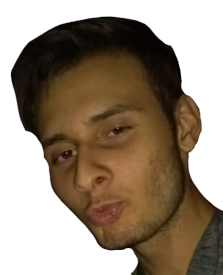
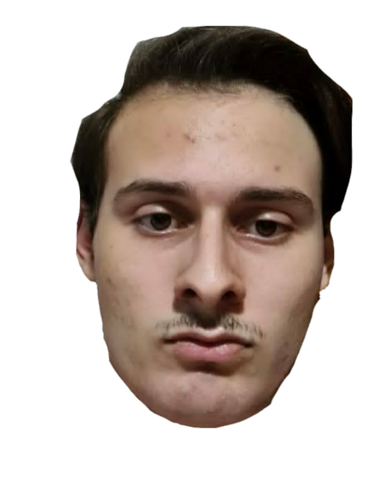
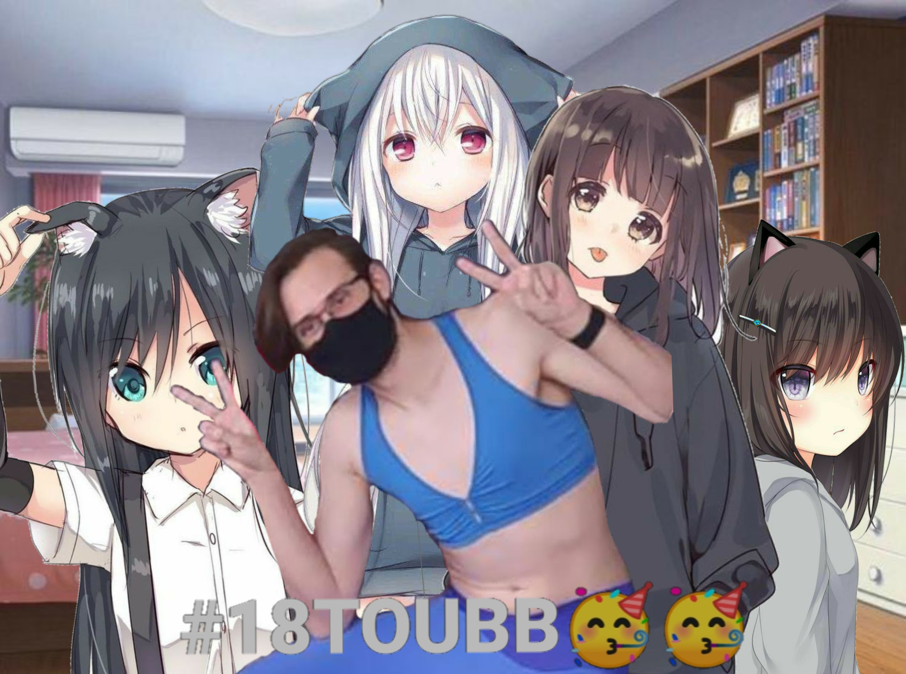
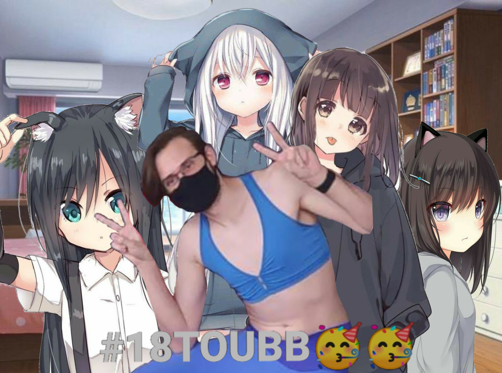

A festa
Qualquer duvida sobre a festa, entre em contato nesse número:
(18) 99808-7669
Algumas da principais informações:
 (1) (1).png)
Local da festa!
A festa vai ser no local:
Bairro Aeroporto-Faive,
Presidente Venceslau, SP.
Na chacara do Roberlei
(primeira chacara depois da faive)

No local teremos algumas,
Sobre bebidas
No local teremos algumas,
mas aconselhamos que leve
o que gostaria de beber
teremos apenas 3 gins e 3 vodkas
e refrigerantes

A festa irá acontecer no dia 25/06

 
